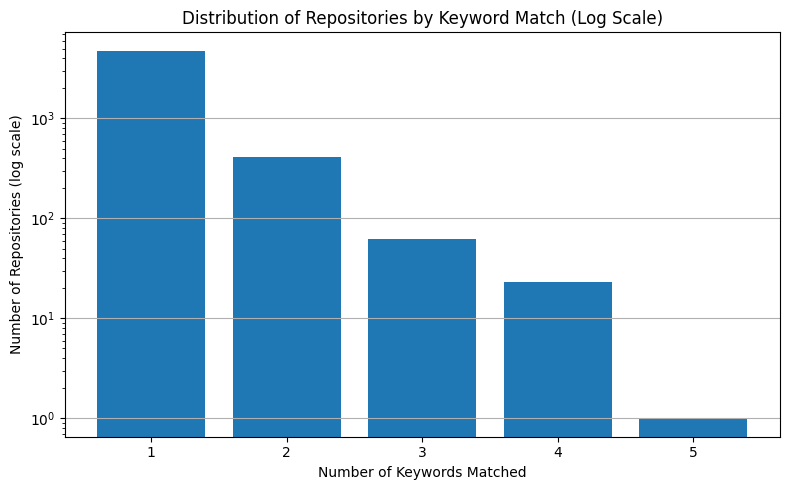

For each keyword, we retrieve up to max_pages × per_page results from GitHub’s Code Search API, filtering for Python files. Each result is a code file matched to the keyword, and we collect the:
Repository name
File path
URL to the matching file
Matching keyword
These are grouped by repository. For each repository, we track:
All matched keywords (as a signal of LLM usage diversity)
All matching file paths and URLs
This allows us to:
Filter for repositories with stronger LLM relevance (based on keyword match count)
Generate a dataset of repositories likely to contain rich prompt engineering artifacts
import matplotlib.pyplot as plt# Count number of repositories per keyword_count categorykeyword_count_distribution = df["keyword_count"].value_counts().sort_index()# Print distributionprint("Repositories by number of matched keywords:\n")for count, num_repos in keyword_count_distribution.items():print(f"{count} keyword(s): {num_repos} repository(ies)")plt.figure(figsize=(8, 5))df["keyword_count"].plot( kind="hist", bins=range(1, df["keyword_count"].max() +2), rwidth=0.8, align="left", log=True# Log scale)plt.title("Distribution of Repositories by Keyword Match (Log Scale)")plt.xlabel("Number of Keywords Matched")plt.ylabel("Number of Repositories (log scale)")plt.xticks(range(1, df["keyword_count"].max() +1))plt.grid(axis='y')plt.tight_layout()plt.show()
Repositories by number of matched keywords:
1 keyword(s): 4763 repository(ies)
2 keyword(s): 407 repository(ies)
3 keyword(s): 62 repository(ies)
4 keyword(s): 23 repository(ies)
5 keyword(s): 1 repository(ies)

Metadata Collection
The next step is to enrich these repositories with basic project-level metadata. The goal is to better understand the characteristics of each repository and enable informed filtering or stratification prior to deeper prompt analysis.
This step retrieves public metadata for each repository in our initial dataset, including:
Popularity indicators:
Star count
Fork count
Watcher count
Project activity indicators:
Open issue count
Recent push/update timestamps
Default branch name
Language and license info
Basic descriptions:
Project summary
Creation date
GitHub URL
These features help determine which repositories are actively maintained, widely used, or potentially worth deeper inspection (e.g. via commit history or prompt extraction).
import osimport jsonimport timeimport requestsimport pandas as pdfrom dotenv import load_dotenv# Load GitHub tokenload_dotenv()GITHUB_TOKEN = os.getenv("GITHUB_TOKEN")# Load previously matched repositorieswithopen("../data/matched_repositories.json", "r") as f: matched_repos = json.load(f)# Set up GitHub API headersheaders = {"Accept": "application/vnd.github.v3+json"}if GITHUB_TOKEN: headers["Authorization"] =f"token {GITHUB_TOKEN}"# Extract unique repo namesrepo_names =sorted(set(repo["repository"] for repo in matched_repos))# Store metadatarepo_metadata = []for i, repo_full_name inenumerate(repo_names, start=1):print(f"[{i}/{len(repo_names)}] Getting metadata for: {repo_full_name}") url =f"https://api.github.com/repos/{repo_full_name}"try: r = requests.get(url, headers=headers) r.raise_for_status() data = r.json() repo_metadata.append({"repository": repo_full_name,"description": data.get("description"),"stars": data.get("stargazers_count"),"forks": data.get("forks_count"),"watchers": data.get("subscribers_count"),"open_issues": data.get("open_issues_count"),"default_branch": data.get("default_branch"),"created_at": data.get("created_at"),"updated_at": data.get("updated_at"),"pushed_at": data.get("pushed_at"),"language": data.get("language"),"license": data.get("license", {}).get("name") if data.get("license") elseNone,"html_url": data.get("html_url") })# Respect rate limit remaining =int(r.headers.get("X-RateLimit-Remaining", 1))if remaining <2: reset_time =int(r.headers.get("X-RateLimit-Reset", 0)) sleep_for =max(1, reset_time - time.time())print(f"Rate limit approaching, sleeping for {sleep_for:.1f}s...") time.sleep(sleep_for +1)except requests.RequestException as e:print(f"Failed for {repo_full_name}: {e}")# Save resultsdf = pd.DataFrame(repo_metadata)df.to_csv("../data/repo_metadata.csv", index=False)df.to_json("../data/repo_metadata.json", orient="records", indent=2)print(f"\nSaved metadata for {len(df)} repositories:")print("- CSV: ../data/repo_metadata.csv")print("- JSON: ../data/repo_metadata.json")
Merging Keyword Match Results with Repository Metadata
After collecting the two separate datasets — one with repositories matched by LLM-related keyword occurrences (keyword_count, keywords_matched, etc.), and another with general repository metadata (stars, forks, issues, etc.) — we merged the two on the common repository identifier.
This step was necessary to:
Unify prompt relevance signals (via keyword matches) with
Project-level indicators of engagement and activity (via GitHub metadata)
The merged dataset provides a comprehensive view of each repository, allowing us to sort, filter, and eventually select a diverse and relevant sample space for further analysis.
Both datasets used repository as a consistent unique key in the format owner/repo-name, which ensured a clean one-to-one merge without duplication. The final combined dataset is saved in both .csv and .json format for reproducibility and downstream processing.
import pandas as pdfrom pathlib import Pathimport json# Load the keyword match datawithopen(Path("..") /"data"/"matched_repositories.json", "r") as f: keyword_data = json.load(f)# Load the repository metadatawithopen(Path("..") /"data"/"repo_metadata.json", "r") as f: metadata = json.load(f)# Convert to DataFramesdf_keywords = pd.DataFrame(keyword_data)df_metadata = pd.DataFrame(metadata)# Merge on repository name (repo full_name)df_combined = pd.merge( df_keywords, df_metadata, how="inner", on="repository")# # Drop any duplicate or redundant columns# df_combined = df_combined.drop(columns=["full_name"])# Save combined outputoutput_path_csv = Path("..") /"data"/"combined_repository_data.csv"output_path_json = Path("..") /"data"/"combined_repository_data.json"df_combined.to_csv(output_path_csv, index=False)df_combined.to_json(output_path_json, orient="records", indent=2)print(f"Merged dataset saved to:\n- {output_path_csv}\n- {output_path_json}")df_combined.head()
Merged dataset saved to:
- ../data/combined_repository_data.csv
- ../data/combined_repository_data.json